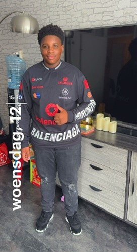
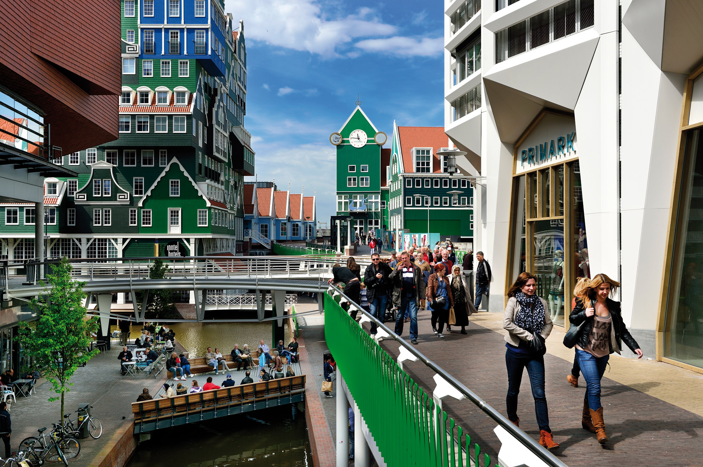
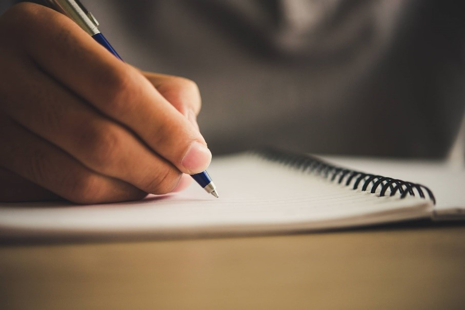

Tyrone Offei
|  | Mijn naam is Tyrone Offei en ik ben 16 jaar oud. ik woon in zaandam en ik doe de opleiding Software development |
Woonplaats
| Persoonlijk vindt ik zaandam een hele mooie plek en is veel te doen, de sfeer is altijd goed en vaak ben ik in zaandam stad dus, daarom heb ik dat plaatje ook erbij gezet. De school waar ik naar toe ging heet Pascal Zuid. Het was een leuke ervaring om op zo'n school te zitten |  |
in mijn vrije tijd
| In mijn vrije tijd doe ik niet echt wat bijzonders Ik hou van slapen, gamen en ook van met vrienden naar buiten gaan. Hier en daar zit ik ook veel aan het leren maar bijna altijd ben ik aan het slapen gamen of buiten zijn met vrienden. |
Wat kan ik al
| Ik vindt dat ik al heel goed ben met leren, engels, rekenen en plannen maken. ook kan ik goed improviseren. Ik ben heel creatief met ideeën en ik kan ook serieus zijn op momenten wanneer het moet. Zelf vindt ik dat ik ook goed ben in hulp bieden als iemand het nodig heeft. |  |
Mijn top 10
dit is een lijst waar ik mijn top 10 dingen laat zien
1 Anime/Manga
2 Valorant (game)
3 Laufey (Artiest)
4 Roblox (game)
5 Boa (artiest)
6 Beabadoobee (artiest)
7 Genshin impact (game)
8 Minecraft (game)
9 Slapen
10 Rainbow six siege (game)